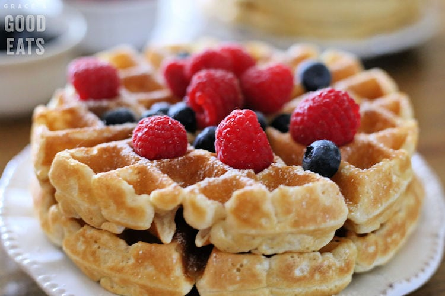

Fluffy Waffles

Description
Fat fluffy delicious waffles that'll make you say "yum" and remind you of those classic waffels you had back in the day. Ooh Im goosing for some right now.
Ingredients
- 2 cups all-purpose flour
- 1 tsp salt
>
- 4 tsp baking powder
- 2 tbsp white sugar
- 2 egss
- 1 1/2 cups warm milk
- 1/3 cup melted butter
- 1 tsp vanilla extract
Directions
- In a large bowl, mix together flour, salt, baking powder and sugar; set aside. Preheat waffle iron to desired temparture
- In a seperate bowl, beat the eggs. Stir in the milk, butter and vanilla. Pour the milk mixture into the flour mixture; beat until blended.
- Ladle the batter into the preheated waffle iron. Cook the waffles until golden and crisp. Serve Immediately.